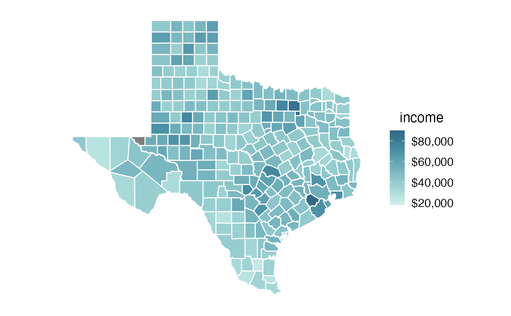

Median income in Texas counties, from the 2015 five-year American Community Survey.
texas_income
An object of class sf (inherits from data.frame) with 254 rows and 6 columns.
#>library(cowplot) library(colorspace) # B19013_001: Median household income in the past 12 months (in 2015 Inflation-adjusted dollars) texas_income %>% ggplot(aes(fill = estimate)) + geom_sf(color = "white") + coord_sf(datum = NA) + theme_map() + scale_fill_continuous_sequential( palette = "Teal", rev = TRUE, na.value = "grey50", end = 0.9, name = "income", limits = c(18000, 90000), breaks = 20000*c(1:4), labels = c("$20,000", "$40,000", "$60,000", "$80,000") ) + theme( legend.title.align = 0.5, legend.text.align = 0 )